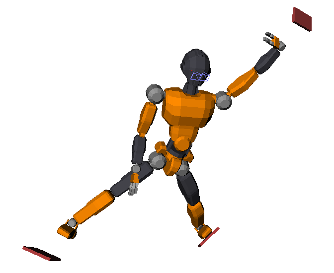

Inverse kinematics (IK) is the problem of computing a motion q(t) in
the robot configuration space (e.g. joint angle coordinates) that achieves a
desired motion in task or workspace coordinates x(t). A task
i can be, for instance, to put a foot on a surface, or to move the
center of mass (CoM) of the robot to a target location. Tasks are then
collectively defined by a set x=(x1,…,xN) of points or
frames attached to the robot, with for instance x1 the CoM,
x2 the center of the right foot sole, etc.
The problems of forward and inverse kinematics relate configuration-space and
workspace coordinates:
- Forward kinematics: compute workspace motions x(t) resulting
from a configuration-space motion q(t). Writing FK this
mapping, x(t)=FK(q(t)).
- Inverse kinematics: compute a configuration-space motion q(t)
so as to achieve a set of body motions x(t). If the mapping
FK were invertible, we would have q(t)=FK−1(x(t)).
However, the mapping FK is not always invertible due to kinematic
redundancy: there may be infinitely many ways to achieve a given set of tasks.
For example, if there are only two tasks x=(xlf,xrf) to
keep left and right foot frames at a constant location on the ground, the
humanoid can move its upper body while keeping its legs in the same
configuration. In this post, we will see a common solution for inverse
kinematics where redundancy is used achieve multiple tasks at once.
Kinematic task
Let us consider the task of bringing a point p, located on one of
the robot’s links, to a goal position p∗, both point coordinates
being expressed in the world frame. When the robot is in configuration
q, the (position) residual of this task
is:
r(q)=p∗−p(q)The goal of the task is to bring this residual to zero. Next, from forward
kinematics we know how to compute the Jacobian matrix of p:
J(q)=∂q∂p(q),which maps joint velocities q˙ to end-point velocities p˙
via J(q)q˙=p˙. Suppose that we apply a velocity
q˙ over a small duration δt. The new residual after
δt is r′=r−p˙δt. Our goal is to
cancel it, that is r′=0⇔p˙δt=r, which leads us to define the velocity residual:
v(q,δt)=defδtr(q)=δtp∗−p(q)The best option is then to select q˙ such that:
J(q)q˙=p˙=v(q,δt)If the Jacobian were invertible, we could take q˙=J−1v.
However, that’s usually not the case (think of a point task where J
has three rows and one column per DOF). The best solution that we can get in
the least-square sense is the solution to:
q˙minimize ∥Jq˙−v∥2,and is given by the pseudo-inverse J† of
J: q˙=J†v. By writing this equivalently as
(J⊤J)q=J⊤v, we see that this approach is
exactly the Gauss-Newton algorithm. (There is a
sign difference compared with the Gauss-Newton update rule, which comes from
our use of the end-effector Jacobian ∂p/∂q
rather than the residual Jacobian ∂r/∂q.)
Task gains
For this solution to work, the time step δt should be
sufficiently small, so that the variations of the Jacobian term between
q and q+q˙δt can be neglected. The total
variation is
J(q+q˙δt)q˙−J(q)q˙=δtq˙⊤H(q)q˙where H(q) is the Hessian matrix of the task. This matrix is
more expensive to compute than J. Rather than checking that the
variation above is small enough, a common practice is to multiply the
velocity residual by a proportional gain Kp∈[0,1]:
J(q)q˙=KpvFor example, Kp=0.5 means that the system will (try at best to) cut
the residual by half at each time step δt. Adding this gain does
not change the exponential convergence to the solution r=0, and helps avoid overshooting of the real solution. When you
observe instabilities in your IK tracking, reducing task gains is usually a
good idea.
Multiple tasks
So far, we have seen what happens for a single task, but redundant systems like
humanoid robots need to achieve multiple tasks at once (moving feet from
contact to contact, following with the center of mass, regulating the angular
momentum, etc.) A common practice to combine tasks is weighted combination. We
saw that a task i can be seen as minimizing ∥Jiq˙−Kivi∥2. Then, by associating a weight wi to each task, the IK
problem becomes:
q˙minimize task i∑wi∥Jiq˙−Kivi∥2The solution to this problem can again be computed by pseudo-inverse or using a
quadratic programming (QP) solver. This formulation has some convergence
properties, but its
solutions are always a compromise between tasks, which can be a problem in
practice. For example, when a humanoid tries to make three contacts while it is
only possible to make at most two, the solution found by a weighted combination
will be somewhere “in the middle” and achieve no contact at all:

In practice, we can set implicit priorities between tasks by having e.g. wi=104 for the most important task, wi=102 for the next
one, etc. This is for instance how the pymanoid IK is used in this paper. This solution emulates the
behavior of a hierarchical quadratic program (HQP) (unfortunately,
there has been no open source HQP solver available as of 2016–2021). See this
talk by Wieber (2015) for an
deeper overview of the question.
Inequality constraints
Last but not least, we need to enforce a number of inequality constraints to
avoid solutions that violate e.g. joint limits. The overall IK problem becomes:
q˙minimize subject to task i∑wi∥Jiq˙−Kivi∥2q˙−≤q˙≤q˙+Inequalities between vectors being taken componentwise. This time, the
pseudo-inverse solution cannot be applied (as it doesn’t handle inequalities),
but it is still possible to use a QP solver, such as CVXOPT or quadprog in Python. These solvers work on
problems with a quadratic cost function and linear inequalities:
xminimize subject to (1/2)x⊤Px+r⊤xGx≤hThe weighted IK problem falls under this framework.
Cost function
Consider one of the squared norms in the task summation:
∥Jiq˙−Kivi∥2=(Jiq˙−Kivi)⊤(Jiq˙−Kivi)=q˙⊤Ji⊤Jiq˙−Kivi⊤Jiq˙−Kiq˙⊤Ji⊤vi+Ki2vi⊤vi=q˙⊤(Ji⊤Ji)q˙−2(Kivi⊤Ji)q˙+Ki2vi⊤viwhere we used the fact that, for any real number x, x⊤=x.
As the term in vi⊤vi does not depend on q˙, the
minimum of the squared norm is the same as the minimum of (1/2)q˙⊤Pq˙+r⊤q˙ with Pi=Ji⊤Ji and
ri=−Kivi⊤Ji. The pair (P,r) for the
weighted IK problem is finally P=∑iwiPi and r=∑iwiri.
Joint limits
There are two types of joint limits we can take into account in first-order
differential inverse kinematics: joint velocity, and joint-angle limits.
Since we solve a problem in q˙, velocity limits can be directly
written as Gq˙≤h where G stacks the matrices
+E3 and −E3, while h stacks the
corresponding vectors +q˙+ and −q˙−. In practice, joint
velocities are often symmetric, so that q˙+=q˙max and
q˙−=−q˙max and h stacks
q˙max twice.
Next, we want to implement limits on joint angles q−≤q≤q+ so that the robot stays within its mechanical range of motion. A
solution for this is to add velocity bounds:
q˙−q˙+=Klimδtq−−q=Klimδtq+−qwhere Klim∈[0,1] is a proportional gain. For example,
a value of Klim=0.5 means that a joint angle update will
not exceed half the gap separating its current value from its bounds (Kanoun,
2011).
To go further
The differential inverse kinematics formulation we have seen here is implemented in Python in Pink (based on Pinocchio) as well as in mink (based on MuJoCo) by Kevin Zakka. Both libraries comes with a number of examples for manipulators, humanoids, quadrupeds, robotic hands, ... Alternatively to forming a quadratic program (with worst-case complexity cubic in the number of parameters), it is also possible to solve differential IK directly on the kinematic tree with linear time-complexity. This alternative is implemented in the LoIK open-source library. It solves problems faster than QP solvers, but it only applies to single-body tasks (e.g. no center-of-mass task).
Levenberg-Marquardt damping
One efficient technique to make the IK more numerically stable is to add Levenberg-Marquardt damping, an extension of Thikonov regularization where the damping matrix is chosen proportional to the task error. This strategy is implemented e.g. by the BodyTask of Pink. See (Sugihara, 2011) for a deeper dive.
Second-order differential IK
Differential IK at the acceleration level (second order) has been more common than first order version we have seen in this note. It can be found for instance in the Tasks library, which powered ladder-climbing by an HRP-2 humanoid robot, as well as in the TSID open-source library.
History of the expression “inverse kinematics”
Thirty-five years ago (Richard, 1981), “inverse kinematics” was defined as the problem of finding joint angles q fulfilling a set of tasks g(q)=0, which is a fully geometric problem. (A better name for it could have been "inverse geometry", considering that kinematics which means motion and that this problem does not involve motion.) Various solutions were proposed to approach this question, the most widely reproduced idea being to compute successive velocities that bring the robot, step by step, closer to fulfilling g(q)=0. This approach was called “differential inverse kinematics” (Nakamura, 1990) to distinguish it from the existing “inverse kinematics” name. (A better name for it could have been, well, "inverse kinematics", since it does involve motion!)
Discussion
Feel free to post a comment by e-mail using the form below. Your e-mail address will not be disclosed.